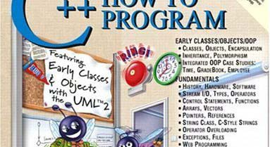
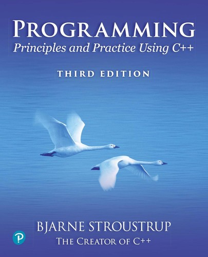
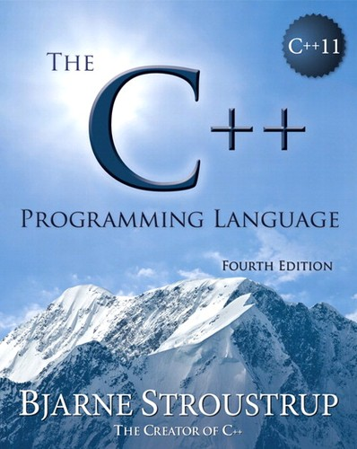
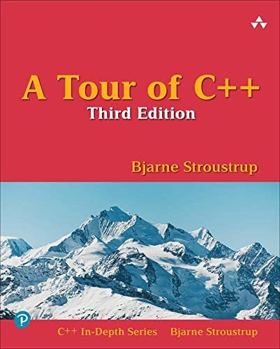
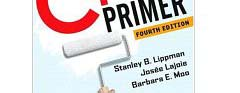
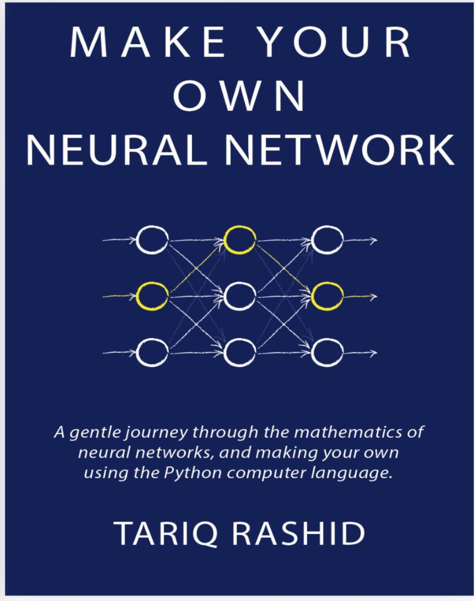

Programmazione Scientifica++: Lezione 1
Introduzione al Corso, Obiettivi e Testi di Riferimento
Argomenti di oggi
- Il corso: obiettivi, prerequisiti, organizzazione, metodo di lavoro
- I materiali: testi di riferimento e risorse in rete
- Perché il C++
- Compilato o interpretato
- Il C++ moderno (C++11, 14, 17)
- L’obiettivo del corso
- Il dataset MNIST
- La filosofia di
BASIC_NEURAL++: nessuna libreria di machine learning
- Dal C procedurale al C++ a oggetti
Introduzione
- Sono un fisico computazionale: mi occupo di fisica della materia soffice e di biofisica.
- Non sono un programmatore di professione, né un esperto di C++.
- Perché allora tengo questo corso?
- Uso il C++ dal 1999, dal dottorato, per:
- simulazioni Monte Carlo e di dinamica molecolare;
- analisi dei dati.
Perché studiare il C++?
- Negli ultimi decenni il C++ ha affiancato il Fortran nel calcolo scientifico, e in molti campi lo ha sostituito.
- I grandi esperimenti (per esempio al CERN) lo usano dalla metà degli anni ’90.
- Sono scritti in C++ molti strumenti di analisi dei dati e di calcolo numerico, e molti codici di simulazione.
Prerequisiti del corso
- Avete già seguito un corso di programmazione di base in C.
- Sapete a cosa servono i programmi nei vari campi della fisica.
- Sapete cosa vuol dire compilare ed eseguire un programma.
- Se la programmazione orientata agli oggetti (OOP) è nuova per voi:
- il corso la introduce da zero, un passo alla volta.
Obiettivi principali del corso
- Capire a cosa servono la programmazione a oggetti e il C++ moderno.
- Saper progettare classi adatte a risolvere un problema.
- Saper usare e integrare librerie esterne (per esempio Eigen).
- Progetto finale:
- sviluppare in C++ una rete neurale (multi-layer perceptron);
- addestrarla a riconoscere le cifre scritte a mano del dataset MNIST.
Esempi d’uso del C++ in fisica (e non solo)
- ROOT, il framework di analisi dei dati della fisica delle particelle, nato al CERN nel 1995
- Codici di simulazione di sistemi complessi: LAMMPS, ESPResSo, HOOMD-blue
- Numerical Recipes, nell’edizione in C++
- L’intelligenza artificiale:
- PyTorch e TensorFlow si usano da Python…
- …ma il loro nucleo di calcolo è scritto in C++ e CUDA.
Informazioni di servizio
- Sito web del corso:
cristiano-de-michele.netlify.app/prog-sci - Orario di ricevimento: martedì 12–13
- Google Classroom: codice
iguoftb2. Tutte le comunicazioni ufficiali passano da lì. - Slide, materiale didattico e codici di partenza dei laboratori sono pubblicati sul sito del corso.
Organizzazione delle lezioni
- Lezioni di teoria, sempre con esempi di codice.
- Laboratori, in cui si applicano gli argomenti delle lezioni e si sviluppa il progetto.
- Teoria e laboratorio procedono insieme: la teoria fornisce gli strumenti per costruire il framework.
Calendario del corso
- Ogni settimana:
- Martedì 14–15, Aula 4: teoria (1 ora)
- Giovedì 12–14, Aula III (Chimica): teoria (2 ore)
- Venerdì 17–19, Aula III (Chimica): laboratorio (2 ore)
- Fine della teoria (prevista): giovedì 3 dicembre
- Da giovedì 10 dicembre anche il giovedì è laboratorio (Aula III): due laboratori a settimana
- I martedì di dicembre e gennaio restano di riserva (recuperi, domande sui progetti)
- Ultima lezione: venerdì 15 gennaio 2027
- Festività e pausa natalizia secondo il calendario di Ateneo
Come funzionerà il corso?
- Non vedremo nel dettaglio tutti gli operatori, i comandi e la sintassi del C++:
- li descrivono bene libri e siti web (le risorse sono elencate più avanti);
- ripeterli a lezione sarebbe dispersivo.
- Le lezioni si concentrano sugli aspetti che il C++ aggiunge al C.
- Gli esempi mostreranno come si usa il C++ e quali problemi tecnici si incontrano.
- Il corso è costruito attorno a un progetto: il codice scritto in laboratorio compone il vostro framework,
BASIC_NEURAL++.
Imparare un linguaggio come una lingua
- Come una lingua, un linguaggio si impara con gli esempi e con gli errori: la teoria serve a poco se il programma non compila, o compila ma non fa quello che deve.
- Scrivete programmi piccoli, uno per ogni aspetto del C++: imparerete a leggere gli errori di compilazione, e un errore che sapete riconoscere in 10 righe lo ritroverete in 10.000.
- Scrivete il codice invece di copiarlo, e prima di eseguire una riga provate a prevedere cosa farà.
- Provocate gli errori di proposito e leggete cosa risponde il compilatore.
- Fate domande: il C++ è molto vasto.
Lingua del corso
- Le lezioni sono in italiano, ma alcune risorse sono in inglese.
- Perché?
- Molti termini tecnici non si traducono (per esempio template o design pattern).
- Vi sarà più facile cercare riferimenti e materiale aggiuntivo.
- Vi abituerete ai testi in inglese, sempre più comuni nei corsi successivi.
Alcuni testi per iniziare

- Deitel, C++ How To Program
- Adatto a chi non conosce il C++ e cerca un testo che proceda passo passo.

- Stroustrup, Programming: Principles and Practice
- 3ª ed., 2024 (C++20). Il testo introduttivo dell’autore del C++, adatto a chi inizia.
Altri testi di riferimento

- Stroustrup, C++ Programming Language
- Il riferimento classico (fermo al C++11), utile per le basi.

- Stroustrup, A Tour of C++ (3ª ed.)
- Moderno e sintetico (C++20): non per principianti, adatto a chi sa già programmare.

- Lippman, C++ Primer
- Testo didattico completo (anche questo fermo al C++11), più discorsivo.
Testo di riferimento: reti neurali

- Tariq Rashid, Make Your Own Neural Network
- Il libro su cui si basa il progetto del corso.
- Non usa librerie esterne e spiega passo passo la matematica delle reti neurali.
- Serve a capire come funziona una rete neurale prima di scriverla in C++.
Tematiche: le basi e l’architettura
- Gestione della memoria in C++ (puntatori, heap).
- Ciclo di vita degli oggetti (costruttori, distruttori).
- Introduzione alla programmazione orientata agli oggetti (OOP).
- Incapsulamento, ereditarietà e polimorfismo.
- Astrazione: interfacce e classi astratte (funzioni virtuali pure).
Tematiche: gli strumenti
- Compilatori, CMake e organizzazione del codice.
- Programmazione generica (template).
- La Standard Template Library (STL) e gli smart pointer.
- Librerie matematiche (Eigen).
- Gestione degli errori (eccezioni).
Risorse in rete
- cppreference.com — il manuale di riferimento, da tenere sempre aperto.
- cplusplus.com — tutorial introduttivi, più discorsivi.
- isocpp.org — il sito della Standard C++ Foundation, con le Core Guidelines e le FAQ.
- StackOverflow — quasi ogni errore che incontrerete ha già una risposta lì.
- Documentazione di Eigen — la libreria che useremo dal Lab 05.
- In rete si trovano interi corsi universitari di C++, con lezioni ed esempi.
- Gli assistenti basati sull’IA (Gemini, Claude, ChatGPT) sono utili per imparare, a patto di verificare quello che propongono.
Compilato vs interpretato (1/3)
- Python, MATLAB e R sono linguaggi interpretati.
- Il codice è eseguito da un interprete, che legge e traduce le istruzioni mentre il programma gira.
- Vantaggi: facili da usare, nessuna compilazione, tipizzazione dinamica.
- Svantaggi: lenti, soprattutto nei cicli numerici su grandi quantità di dati.
Compilato vs interpretato (2/3)
- C e C++ sono linguaggi compilati.
- Prima dell’esecuzione un programma, il compilatore (per esempio
g++), traduce il codice sorgente in linguaggio macchina (binario). - Il processore esegue direttamente le istruzioni binarie.
- Svantaggi: tempi di compilazione, gestione esplicita dei tipi e della memoria.
- Vantaggi: prestazioni elevate e controllo diretto della memoria e dell’hardware.
Compilato vs interpretato (3/3)
- Per l’intelligenza artificiale l’industria ha trovato un compromesso:
- Python come interfaccia;
- C++ per il motore che esegue i calcoli, per esempio i prodotti tra grandi matrici.
- Anche NumPy funziona così: le sue funzioni sono codice compilato.
- In questo corso scriveremo il motore.
Il C++ moderno (C++11, 14, 17)
- Il C++ ha fama di linguaggio difficile, per via del vecchio standard (C++98).
- La gestione manuale della memoria era una fonte frequente di errori (segmentation fault, memory leak).
- Nel corso useremo il C++ moderno, con lo standard C++17.
- Il C++ moderno è più sicuro, più conciso e per certi versi più vicino a Python, grazie a strumenti come la deduzione dei tipi (
auto) e gli smart pointer.
Il dataset MNIST: il “Hello World” del ML
- L’obiettivo finale del corso è una rete neurale che riconosce cifre scritte a mano.
- Useremo il dataset MNIST (Modified National Institute of Standards and Technology).
- Contiene 60.000 immagini di addestramento e 10.000 immagini di test.
- Le immagini sono in scala di grigi, di 28×28 pixel.
La sfida informatica di MNIST
- Le immagini non sono file
.pngo.jpg: le useremo in formato CSV, una riga per immagine; la prima colonna è la cifra, le altre 784 sono i pixel, da 0 a 255. - Leggerle sarà una delle sfide pratiche del Laboratorio 12: 60.000 righe da leggere senza sprecare memoria, da convertire in matrici e da riscalare nell’intervallo giusto (se si sbaglia qui, la rete non impara).
- Vedrete che anche “leggere un file” richiede attenzione, quando i dati sono tanti.
La filosofia di BASIC_NEURAL++
- Durante il corso costruiremo
BASIC_NEURAL++. - Regola: nessuna libreria di machine learning (niente PyTorch, niente TensorFlow).
- Cosa useremo:
- la Standard Library del C++;
- Eigen, per l’algebra lineare;
- OpenCV, nella parte finale, per leggere le immagini delle cifre che scriverete a mano.
Dal C procedurale al C++ a oggetti
- Il C (anni ’70) è un linguaggio procedurale: il programma è organizzato in funzioni che agiscono su strutture dati passive.
- Negli anni ’80 Bjarne Stroustrup sviluppa il C++, che introduce la programmazione orientata agli oggetti (OOP): un oggetto riunisce i dati (attributi) e le operazioni su quei dati (metodi).
- Nel nostro framework:
- una
Matrixnon è solo una griglia di numeri: è un oggetto che conosce le proprie dimensioni e sa moltiplicarsi per un’altra matrice; - anche la rete neurale sarà fatta di oggetti. Come è fatta una rete lo vedremo dalla prossima lezione.
- una
Quesiti finali
Due domande da portarsi a casa. La prima ha una risposta numerica, la seconda no: le slide restano sul sito, ragionateci con calma.
1. Interpretato o compilato: quanto cambia? Addestrare la rete del corso, con dieci passaggi su tutte le 60.000 immagini di MNIST, richiede circa \(3 \cdot 10^{11}\) moltiplicazioni (da dove venga il numero lo vedremo nelle prossime lezioni). Un ciclo in Python puro esegue circa \(10^7\) moltiplicazioni al secondo, lo stesso ciclo in C++ compilato circa \(10^9\). Quanto dura l’addestramento nei due casi?
2. Quanto pesa un numero scritto in chiaro? Un pixel di MNIST è un byte: un intero fra 0 e 255. Nel file CSV lo stesso pixel è scritto in cifre decimali, seguito da una virgola. Quanti caratteri costa? Stimate di quanto il file è più grosso dell’informazione che contiene, e chiedetevi chi paga il conto quando il programma lo legge.
Quesiti finali: le risposte
1. In Python puro servono \(3 \cdot 10^{11} / 10^7 = 3 \cdot 10^4\) s, più di otto ore; in C++ \(3 \cdot 10^{11} / 10^9 = 300\) s, cinque minuti. NumPy si avvicinerebbe al C++, perché le sue funzioni sono codice compilato.
Un fattore 100 separa una prova che sta dentro un laboratorio da una che occupa una notte: è il motivo per cui tre slide di questa lezione parlano di linguaggi compilati. In laboratorio misurerete il tempo vero del vostro codice: tenete da parte questi numeri e confrontateli.
2. Traccia: 0, sono due caratteri, 255, sono quattro, per un solo byte di informazione. E ogni carattere va letto, riconosciuto come cifra e ricomposto in un numero: 60.000 righe per 785 valori fanno 47 milioni di numeri da ricostruire, a ogni lettura del dataset. È esattamente il lavoro del Laboratorio 12.